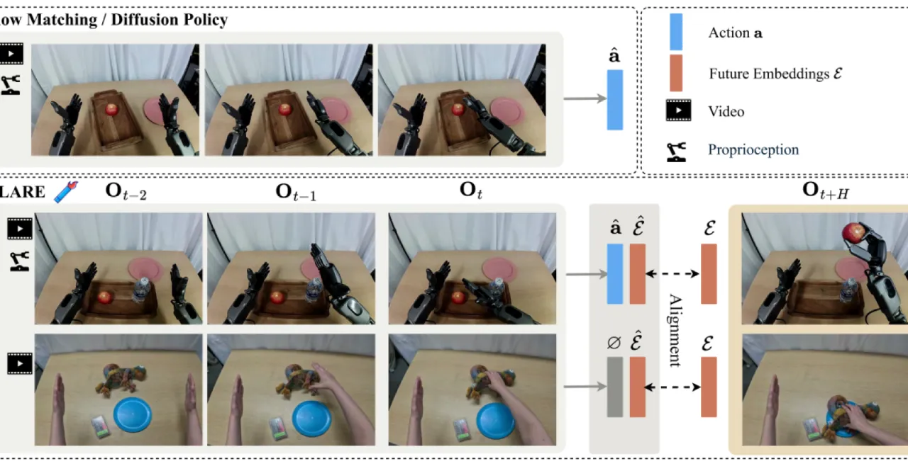
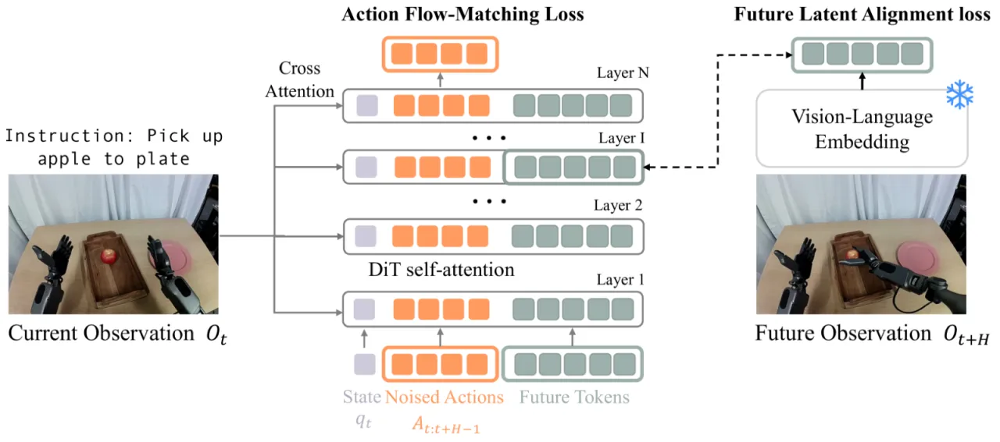
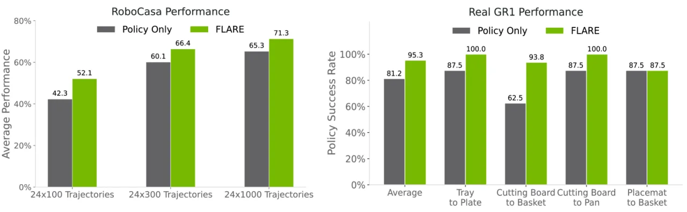
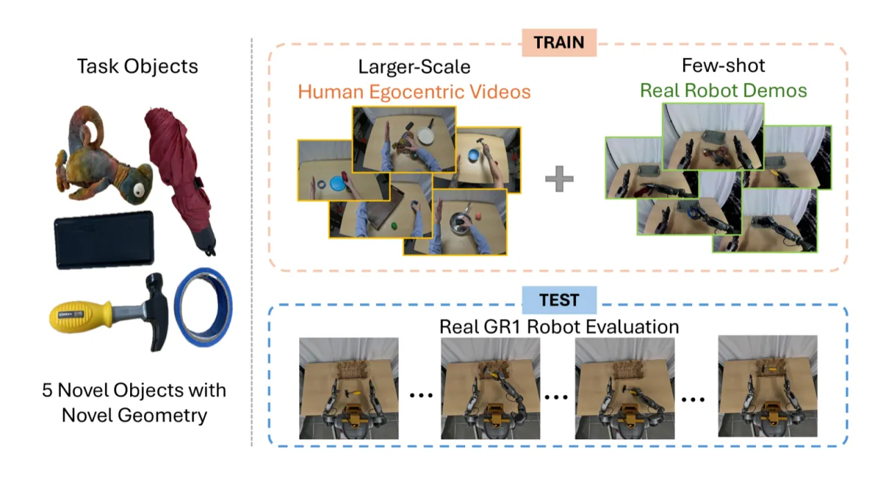
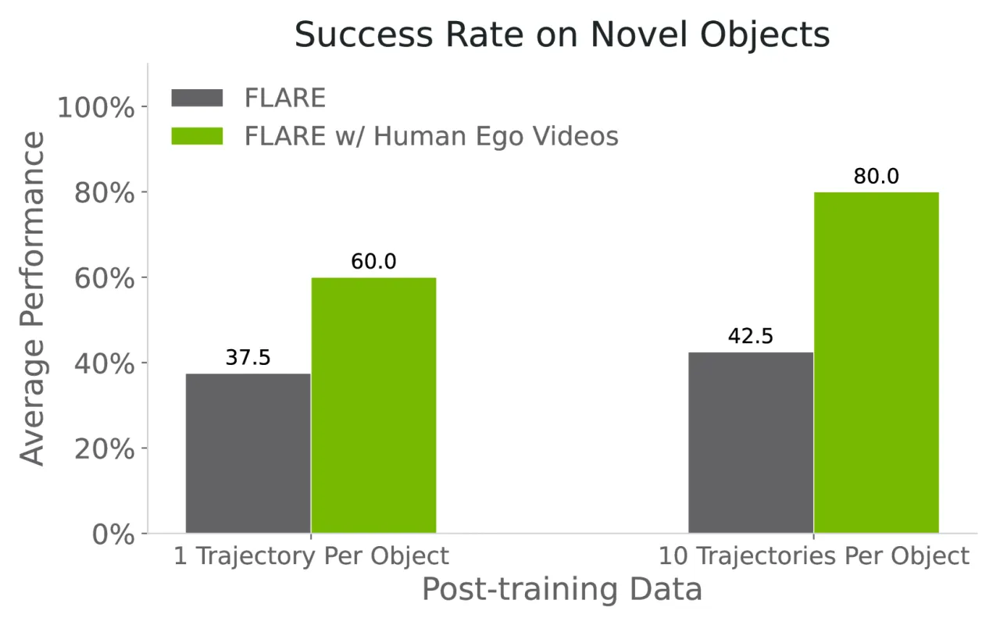

FLARE 在扩散变换器策略内嵌入隐式潜在世界模型，通过余弦对齐损失将中间层特征与未来观测嵌入对齐，让机器人在生成动作时同步"预见"未来状态。无需像素级视觉生成，以极小的架构改动在多任务操作基准上最高超越现有方法 26%，并可利用无动作标注的人类示范视频提升泛化能力。
机器人操作需要对长程因果关系的推理能力——预见当前动作对未来状态的影响。现有显式世界模型方法为此生成高保真像素级视觉预测，却带来巨大的计算开销，且面临内在矛盾：视觉生成强调空间细节与纹理合成，而动作建模更需紧凑、抽象、任务相关的表示。
"We show that a surprisingly simple and flexible recipe, fully compatible with existing VLA architectures, can surpass prior VLA policy learning methods by a substantial margin."
FLARE 的核心洞察：不必生成像素，只需在策略网络内部预测未来观测的隐式嵌入，便可赋予策略世界模型的感知能力，同时保持架构精简。这也解锁了对无动作标注人类视频的联合训练，大幅提升对新物体的泛化能力。

FLARE 在标准 diffusion transformer（DiT）策略之上增加两个组件：① 附加于序列末尾的可学习 future tokens；② 将 DiT 中间层特征对齐至冻结的未来观测嵌入的 alignment loss。推理时 future tokens 被直接丢弃，无任何额外开销。

在 DiT 的第 L 层，抽取与 future tokens 对应的中间激活，经 MLP 投影后与未来观测 ϕ_{t+H} 的冻结嵌入做余弦对齐：
ℒ_align(θ) = −𝔼_τ [ cos( f_θ(ϕ_t, A_t^τ, q_t), g(ϕ_{t+H}) ) ]
其中 g(·) 为冻结的 Action-Aware Embedding Model，f_θ(·) 为可训练 MLP。预测紧凑的语义嵌入而非像素，既降低了计算量，又捕获了任务相关的高阶信息。超参数 λ 控制 ℒ_align 与标准 flow-matching 损失 ℒ_flow 的权重，实验中 λ = 0.2 最优。
通用视觉语言编码器（如 SigLIP2）缺乏对操作任务的敏感性，直接用于对齐效果不佳。FLARE 专门预训练了一个 Q-former 式编码器：
消融实验表明，将通用 SigLIP2 替换为 Action-Aware Embedding 使 GR-1 基准成功率从 49.6–50.9% 提升至 55.0%。
由于 ℒ_align 仅依赖当前与未来帧的嵌入对，不需要动作标注，FLARE 可以直接在人类示范视频（egocentric video）上计算世界模型损失，同时在机器人演示上计算完整的 flow-matching 损失。这为使用大规模无标注人类视频提供了天然途径。
实验分四部分：① 多任务基准对比；② 数据高效的 post-training；③ 人类视频辅助的新物体泛化；④ 消融研究。基准平台为 RoboCasa（仿真，24 任务，Franka 机械臂）与 GR-1 Tabletop（仿真，24 任务，人形机器人）以及真实 GR-1 机器人。
| 方法 | RoboCasa 24 任务 | GR-1 Tabletop 24 任务 |
|---|---|---|
| Diffusion Policy | 51.7% | 40.9% |
| UWM | 60.8% | 29.5% |
| GR00T N1 (Scratch) | 60.6% | 45.1% |
| Policy Only（本文 baseline） | 61.9% | 44.0% |
| FLARE（本文） | 70.1% | 55.0% |
FLARE 在两个基准上均大幅超越所有对比方法：RoboCasa 较 Policy Only 提升 +8.2%，较 UWM 提升 +9.3%；GR-1 Tabletop 较 Policy Only 提升 +11.0%，较 UWM 提升 +25.5%。



论文明确指出："we focus mainly on imitation learning with pick-and-place tasks on a real humanoid robot. Extending to more complex humanoid tasks that require more fine-grained dexterous manipulation … remains an important direction."细粒度灵巧操作（如工具使用、精密装配）尚未验证。
论文将"incorporating reinforcement learning into the training paradigm"列为重要未来方向。目前 FLARE 仅在模仿学习框架下验证，RL 是否能进一步放大世界模型带来的收益尚不清楚。
人类视频泛化实验依赖头戴式 GoPro 相机在受控环境中录制，视角与光照条件相对固定。论文提及"controlled settings using head-mounted GoPro cameras"。对真实野外场景的泛化能力尚未评估。
实验中真实机器人每任务使用 100 次遥操作示范；即便是"data-efficient"设定也需要 100 条轨迹。在极少示范（1–5 次）场景下，性能会显著下降，系统对示范质量较为敏感。